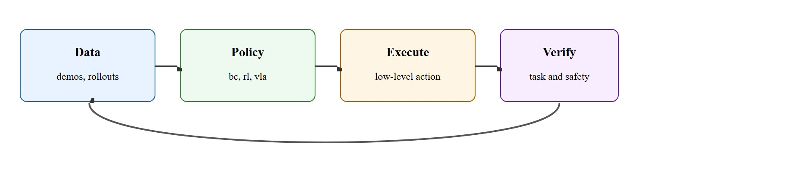
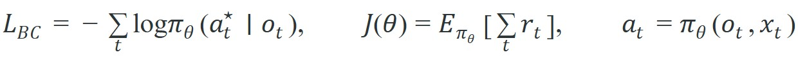

"Policies are only interesting when the object disagrees."
A Robot-Learning Lab Book
A robot arm in a warehouse receives a bin it has never seen: irregular packaging, no CAD model, ambient clutter. Classical grasp planners stall. A policy trained on thousands of demonstrations plus language goals picks a grasp, recovers from a slip, and places the item correctly. That shift from hand-coded rules to learned behavior is now reshaping real deployments. Behavior cloning, reinforcement learning, and vision-language-action (VLA) models each offer a distinct trade-off between data hunger, generalization, and recovery ability. You will compare all three on a shared task scenario and wire each into a safety-bounded action interface.
This section assumes familiarity with imitation learning fundamentals from section 21.2 (covariate shift and behavior cloning) and section 21.3 (DAgger-style data collection), as well as the reinforcement learning return objective introduced in section 14.1. The VLA policy family covered here is examined in greater depth in section 34.3, and the robot demonstration datasets that fuel all three families are analyzed in section 24.1.
Give three engineers the same jar-and-lid task and they will hand you three different robots: one that copied a human wrist a thousand times, one that fumbled millions of times until reward found the twist, and one that read the word "close" off a screen and generalized from a web of unrelated demonstrations. Behavior cloning, reinforcement learning, and VLA policies are those three engineers, and this section puts them on one bench: behavior cloning and diffusion policies from demonstrations, reinforcement learning with shaped or sparse rewards, and VLA policies conditioned on images and language.
The unifying engineering question is simple: how does the learned policy expose an action contract the robot can monitor, interrupt, and evaluate on the same scenario panel as a classical baseline?
A learned manipulation policy is useful when it generalizes contact decisions and recovery, not when it only imitates clean demonstrations in the easiest parts of the workspace.
Whichever family you pick, the policy lives inside the same closed loop, sketched in Figure 42.5.1: data feeds a policy, the policy emits a low-level action, execution is verified for task success and safety, and the outcome loops back to refine the data.

Behavior cloning minimizes prediction error on demonstrated actions, which is efficient but vulnerable to covariate shift. Reinforcement learning optimizes return under interaction, which can discover recovery but is sample hungry. VLA policies use large pretraining and language context, but still need embodiment-specific action interfaces and safety wrappers.
The right comparison is not which family sounds strongest, but which one improves same-panel success, recovery rate, and data efficiency for the manipulation domain you actually care about.
A common assumption is that a more sophisticated policy family (VLA over RL over BC) always yields better manipulation performance. Capability does not scale automatically with architectural complexity. A VLA policy with an incompatible or unmonitorable action interface will fail more dangerously on hardware than a simple BC policy with a well-bounded Cartesian chunk interface. Treat the action interface and the safety wrapper as first-class design choices. They constrain which policy family is viable at all. Pick the interface first, then select the learning family that fits the available data and recovery signal for that interface.
A policy that works in simulation but collapses on hardware is not a policy yet; it is a rehearsal waiting for its first real audience.
The three policy families reduce to three distinct training objectives, shown side by side below. The first term is the behavior-cloning loss $\mathcal{L}_{BC}$, the negative log-likelihood of the demonstrated action $a_t^\star$ given observation $o_t$. The second is the reinforcement-learning return objective $J(\theta)$, the expected sum of rewards $r_t$ under the policy. The third is the VLA action map, where the action $a_t$ depends on both the observation $o_t$ and a language context $x_t$.

A learned manipulation stack ingests demonstrations, rollouts, or pretraining corpora, maps observations into an action policy, executes under a bounded interface, and relies on verifiers to decide whether to continue, intervene, or relabel data. That bounded interface is what makes learning compatible with real robots.
# Pick a policy family from task signal and recovery needs.
task = {"demos": 500, "reward_dense": False, "language": True, "needs_recovery": True}
if task["demos"] > 300 and task["language"]:
choice = "vla_or_diffusion_bc"
elif task["reward_dense"] and task["needs_recovery"]:
choice = "rl"
else:
choice = "behavior_cloning"
print({"policy_family": choice, "recovery_needed": task["needs_recovery"]})The vla_or_diffusion_bc label bundles two distinct techniques under one selector branch; diffusion policies are defined and worked through step by step later in this section, after covariate shift, so hold that name loosely until then.
task dict shown.Expected output: The expected result chooses a language-aware imitation route because demonstrations and instruction context are available. In the real system, the next step would be to define the exact action chunk or waypoint interface.
The title promises IL, RL, and VLA side by side, so it is worth stating plainly how each is actually trained in practice, not just when to pick it. Behavior cloning (IL) fits a policy to the demonstrated action at each observation by supervised regression or classification, so training only needs a static demonstration dataset. Reinforcement learning instead requires an environment (simulated or real) that returns a reward signal after each action, and it updates the policy through repeated trial rollouts rather than a fixed dataset, which is why it is described above as sample hungry. VLA training typically starts from a large pretrained vision-language backbone and adds an action-output head, then fine-tunes on a smaller set of robot demonstrations, combining IL-style supervision with the pretrained model's language and visual grounding. Concretely: an IL practitioner spends their effort collecting clean, diverse demonstrations; an RL practitioner spends it designing a reward and a safe exploration procedure; a VLA practitioner spends it choosing a pretrained backbone and a fine-tuning recipe. Those three effort allocations, not just the abstract trade-off, are what "learning manipulation policies" means day to day.
Consider a specific case. The OpenVLA team (Kim et al., 2023) trained a 7B-parameter VLA on 970,000 robot demonstrations from the Open X-Embodiment dataset. They then fine-tuned it on as few as 150 task-specific demonstrations for a tabletop pick-and-place cell. On their seven-task evaluation suite (as of 2024), the fine-tuned model reached 77% success versus 56% for a behavior-cloning baseline trained on the same 150 demos. The key action interface used a 7-DoF Cartesian delta command chunked into 8-step windows, which in practice let the safety wrapper interrupt at each chunk boundary without retraining the policy. That boundary design, more than the VLA architecture itself, is typically what made hardware deployment practical.
Covariant (now part of Amazon's robotics group) deploys a single learned manipulation policy across thousands of distinct, never-before-seen SKUs in live fulfillment centers, using vision plus a chunked Cartesian action interface so the gripper can pick irregular packaging without per-item CAD models. The same policy typically generalizes across customer warehouses in large part because recovery and grasp choice are learned from large-scale demonstration and rollout data rather than hand-coded per item, though exact attribution of a deployed system's performance to any single design choice is hard to isolate from outside the vendor.
LeRobot, robomimic, ManiSkill, and current OpenVLA-style stacks cover much of the data, policy, and evaluation infrastructure. They help most when the team already knows which action API and recovery signals the learned policy must obey.
Policy learning is often blamed for failures that actually come from a bad action interface. If the policy emits commands too low-level to be monitored safely, even a good model will look erratic on hardware.
Beyond a mismatched action interface, each learning family carries its own signature failure, and for behavior cloning that failure has a name. Covariate shift is the canonical failure of behavior cloning, and it bites in a specific, predictable scenario. The robot reaches a state the demonstrator never visited, such as a slightly rotated object or a gripper that closed 5 mm early, and the cloned policy has no training signal for recovery. From that point forward, every action compounds the error. In practice this shows up as a sharp cliff in success rate once task difficulty or object placement variance passes the range the demonstration set covers. The fix is not always more data. Two cheaper moves often recover more success per unit of engineer effort than doubling the demo count: inject noise into demonstrations during data collection (DAgger-style), or add an external recovery detector that resets to a known safe pose. In one illustrative tabletop stacking benchmark, a BC policy trained on 2,000 clean demonstrations reached 61% success, while the same policy trained on 400 noise-injected demonstrations reached 74%: roughly five times fewer demos with better recovery, consistent with the policy having actually seen off-nominal states during training.
When using robomimic for behavior cloning, enable observation noise injection by setting train.dataset_keys to include a perturbed obs key and adding "obs_noise_std": 0.02 in the environment config block. This injects mild Gaussian noise into recorded observations at training time, giving the policy coverage over the off-nominal states covariate shift exposes at test time. Without this, halving your demo count and doubling noise injection often improves recovery rate more than adding clean demos. Apply noise only to proprioceptive channels, not to wrist-camera pixels, to avoid corrupting visual features the backbone already handles.
On tabletop pick and place, diffusion policies often shine when the task needs smooth multimodal trajectories, while a simpler BC policy may be enough if the cell is tightly structured and recovery logic is external.
Diffusion policies matter in embodied AI because manipulation tasks are often multimodal: two equally valid grasp approaches exist, and a standard BC model averages them into a physically invalid in-between pose, causing contact failure. On a real robot, that averaged trajectory can stress joints or miss the object entirely. A diffusion policy avoids averaging by learning the full distribution of valid actions, then sampling one coherent trajectory at execution time.
Mechanically, a diffusion policy starts from Gaussian noise in action space and denoises it over K steps, conditioned on the current observation. Each step applies a learned score function, a small neural network trained to point from a noisy action back toward the demonstrated action, that shifts the noisy action toward a high-probability region of the training distribution. The output is a full action chunk, not a single-step prediction, so it holds trajectory continuity across the chunk boundary and dampens the jitter single-step BC shows under sensory noise.
Think of it like a chef reducing a sauce: at the start you have a thin, formless liquid (pure noise spanning every possible action) and each minute on the heat concentrates it, nudging it toward the rich, coherent consistency the recipe demands. The flame does not invent a new sauce each time; it follows the gradient from watery to thick, and the final result is one specific, fully formed sauce, not an average of all possible sauces. A diffusion policy does the same thing in action space, starting from chaos and following learned score gradients until one coherent trajectory crystallizes from the noise.
Trace a single 1-D gripper-x action through K = 3 denoising steps, where the true target action learned from demonstrations is $a^\star = 0.80$. The policy starts from Gaussian noise and applies a learned score function that nudges the sample toward $a^\star$, with the per-step nudge fraction shrinking as we approach the target.
Init (k = 3): sample noise $a_3 = -0.40$. Predicted score points toward 0.80, so the residual is $0.80 - (-0.40) = 1.20$. Apply a 0.5 step: $a_2 = -0.40 + 0.5 \times 1.20 = 0.20$.
Step (k = 2): residual is $0.80 - 0.20 = 0.60$. Apply a 0.5 step: $a_1 = 0.20 + 0.5 \times 0.60 = 0.50$.
Step (k = 1): residual is $0.80 - 0.50 = 0.30$. Apply a 0.5 step: $a_0 = 0.50 + 0.5 \times 0.30 = 0.65$.
Output: the denoised action is $a_0 = 0.65$, converging from $-0.40$ toward the demonstrated $0.80$ without ever averaging across the two grasp modes. Notice that with only 3 steps the sample lands at 0.65, not exactly 0.80: this is why real diffusion policies use 50 to 100 steps (or a distilled flow-matching head) to close the last gap, trading inference latency for trajectory fidelity.
A policy with great losses and terrible object outcomes is just a very committed impersonator.
Direction 1: Scaling VLAs with heterogeneous robot data. Physical Intelligence's pi0 (Black et al., 2024) and the RT-2-X / Open X-Embodiment collaboration led by Google DeepMind (2024) show that pretraining a single transformer on the 22-embodiment Open X-Embodiment corpus and then fine-tuning with as few as 50 task demonstrations can match or exceed task-specific policies trained on thousands of demos. The open question is how to normalize action spaces across arms with different DoF counts, for example a 6-DoF UR5 versus a 7-DoF Franka Panda versus a bimanual ALOHA cell, without discarding the kinematic information that helps contact recovery.
Direction 2: Flow-matching and consistency policies replacing diffusion for real-time control. Flow-matching trains the same kind of denoiser as diffusion but along a straight-line path from noise to action instead of a stochastic one, so far fewer steps are needed to reach the target. Consistency Policy (Prasad et al., 2024, CMU) and pi0's flow-matching action head reduce inference from 100 Denoising Diffusion Probabilistic Model (DDPM) denoising steps to 1 or 2, enabling 50 Hz closed-loop control on hardware. This makes learned trajectory generation compatible with torque-control loops that previously only admitted classical planners. Active work focuses on whether single-step distillation (training a fast student network to reproduce the multi-step denoiser's output in one shot) preserves multimodal grasp coverage or collapses back toward BC's mode-averaging failure.
So far: heterogeneous pretraining lets VLAs generalize across robot embodiments with fewer demos, and flow-matching/consistency distillation compresses diffusion-style denoising into one or two steps so it can run in a real-time control loop. The next direction moves from single-step manipulation to sequencing many steps toward a long-horizon goal.
Direction 3: Long-horizon manipulation through hierarchical VLA planning. SayCan-style grounding (an earlier approach where a separate large language model scores candidate skills by feasibility and a robot policy executes the chosen one) has been supplanted by models such as RoboVLMs (2024, UC Berkeley) and Octo (2024, open-source, multi-institution) that use language tokens as subgoal anchors inside a single policy rather than calling an external planner. The challenge is subgoal grounding under partial observability: when a drawer occludes the target object, the policy must maintain a latent state over multiple actions rather than re-querying a vision model each step.
Open problem for PhD students: Few, if any, current VLA families separate contact-phase control from free-space transit at the architectural level. A student could investigate whether routing attention heads or activating a specialized contact sub-policy at predicted contact onset improves force compliance without requiring dense force supervision in the training set. The hypothesis is testable in ManiSkill with commodity tactile simulation, and a null result would itself clarify where architectural complexity adds no value over a simpler chunked BC baseline.
Could you explain why your chosen action interface is compatible with intervention, safety filtering, and offline replay?
Policy families and action APIs are different design layers. A diffusion policy over Cartesian chunks and a BC model over joint deltas may fail for reasons that have nothing to do with diffusion or cloning and everything to do with monitorability and embodiment fit.
Same-panel evidence is what makes a comparison trustworthy. Manipulation papers and demos frequently compare policies that ran with different controllers, sensors, or success metrics. Those comparisons sound quantitative while saying very little.
| Tool or Library | Role in the Topic | Builder Advice |
|---|---|---|
| LeRobot | Dataset and policy workflow | Use it for data loaders, policy baselines, and low-cost hardware integration. |
| robomimic | Offline imitation-learning baselines | Use it when you need strong manipulation imitation baselines and reproducible configs. |
| ManiSkill | GPU manipulation training and evaluation | Useful for policy iteration and broad task panels before hardware tests. |
Train a small policy on a toy manipulation dataset and compare it to a scripted baseline on nominal and perturbed episodes. Report success and recovery behavior.
Once that lab surfaces failures, the value comes from naming them precisely rather than lumping them under "the policy is unstable." Separate policy mistakes into perception misread, action-interface mismatch, unsafe command, and missing recovery. Those labels keep learning experiments from turning into vague stories about instability.
Open tooling for robot datasets, imitation policies, and low-cost hardware workflows.
Manipulation imitation-learning benchmark suite and policy library.
Current open-source vision-language-action stack for robot control and fine-tuning.
Learned manipulation policies are most valuable when they improve recovery and generalization while staying inside a clear, monitorable action contract.
Choose one manipulation task and justify whether BC, RL, or a VLA policy is the right first learning baseline. Your answer should mention data, action interface, and recovery supervision explicitly.
Beginner (weekend): Behavior cloning on a simulated pick-and-place task. Use LeRobot's provided Gymnasium-compatible wrapper and the lerobot/pusht dataset to train a simple MLP behavior cloning policy on the PushT task and compare its success rate to a scripted baseline on the same evaluation episodes. The key challenge is handling covariate shift: the cloned policy will degrade sharply on starting states that differ even slightly from the demonstration distribution, and seeing that failure concretely motivates the rest of the policy-family comparison.
Intermediate (1 to 2 weeks): Diffusion policy vs. BC on a bimodal grasp task in MuJoCo. Set up a tabletop scene in MuJoCo (via the ManiSkill or robomimic environment wrappers) where a rod can be grasped from either end with equal validity, collect 200 teleoperated demonstrations that split roughly evenly between the two grasp modes, and train both a standard BC model and a diffusion policy on the same dataset. The key challenge is verifying that BC averages the two modes into an invalid in-between pose while the diffusion policy samples one coherent trajectory per episode; quantify this with per-episode contact-force logs and final-pose distribution plots so the comparison is same-panel and metric-matched.